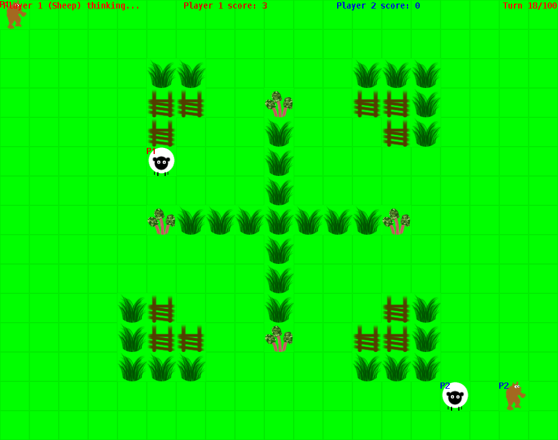
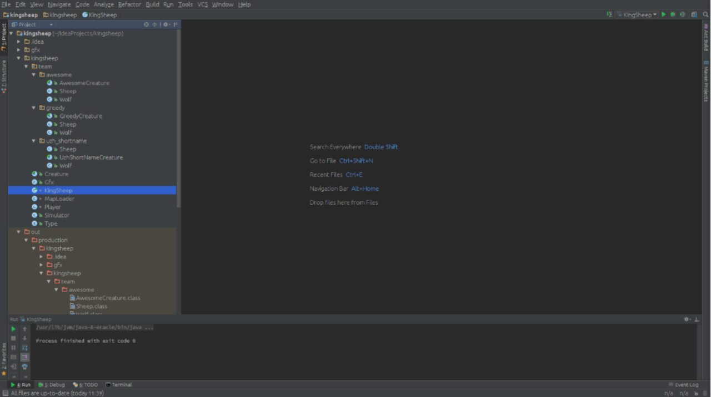
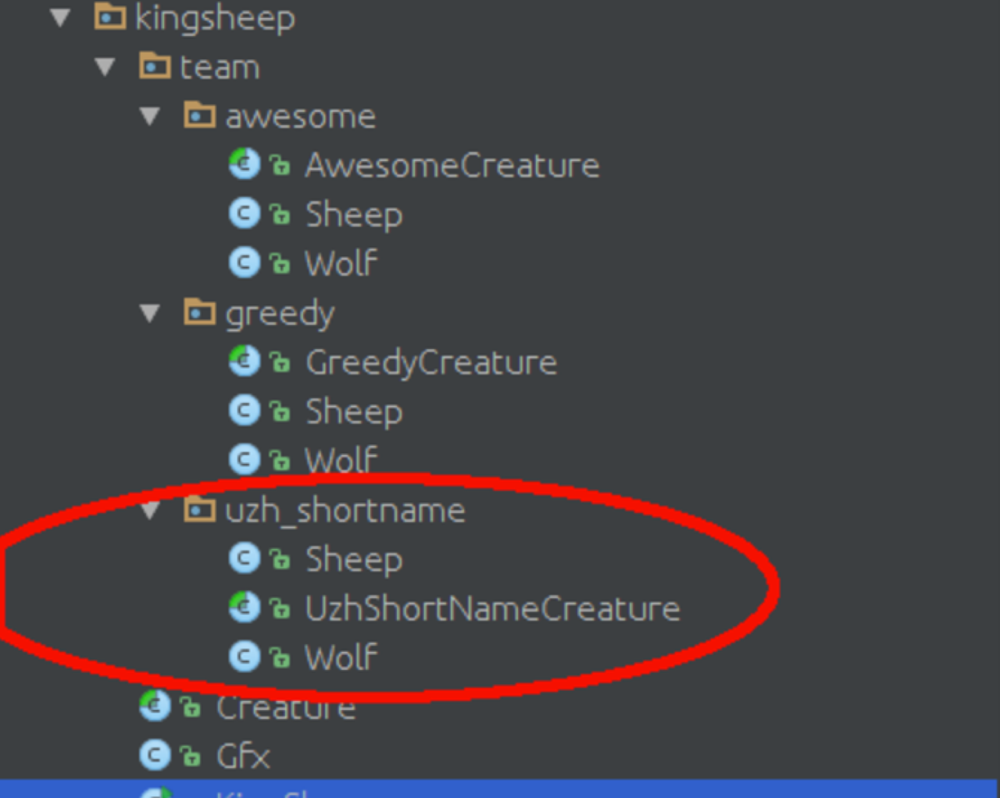

As announced, assignment A1 consists of 2 parts: a theoretical test (in OLAT, 10 points), and a programming assignment (90 points). The total score for the whole assignment is 100 points.
Important: Solutions to theoretical and programming assignments have to be sent before 23:59 of the due date.
Part 1: Theoretical Test (10%)
You have 3 attempts for the test. Your final score will be the points from your best attempt. The exercises are a good training for the final exam. The test contains exercises from the following topics:
- Search
- Adversary search
- Constraint Satisfaction Problems
The maximum score you can get in the test is 10 points. The Test will become available on March 7, 2017, 16:00 after the tutorial session.
Part 2: Programming a Kingsheep Agent (90%)
In the figure below, you can see how the GUI of the game looks like.
Each game is played by two players (P1 and P2) that play against each other. A player has to operate two agents: the sheep and the wolf.
The wolf's objective is to sabotage the other player, by removing food items and trying to catch the opposite player's sheep. The sheep's objective is to score as many points as possible by eating food items.
A screenshot of a game in progress.
Rules and Objective of the Game
Rules:
Both, the wolf and the sheep have 4 options for each call:
- move = Move.UP;
- move = Move.DOWN;
- move = Move.LEFT;
- move = Move.RIGHT;
- move = Move.WAIT;
The wolf is allowed to make a step, for every 2nd step of the sheep.
In other words the sheep can move twice as fast as the wolf.
- Wolfs can not step on squares occupied by the opponents wolf (wolfs block each other).
- Wolfs can not step on squares occupied by the sheep of the same player .
- Sheep can not step on squares occupied by the wolf of the same player.
- Sheep can not step on squares occupied by the opposite sheep.
- Neither the sheep nor the wolf, can enter a square with a fence on.
- Neither the sheep nor the wolf, can step on a square outside the map. Imagine the map is surrounded by fences.
- If the sheep steps on a food object, the food object is consumed (removed from the map) and a score is awarded.
- If the wolf steps on a food object, the food object gets removed but no score is awarded.
Each game lasts for a maximum of 100 turns or unless a sheep gets caught by the wolf, then the game ends immediately.
If the wolf of player1 catches the sheep of player2 the game ends immediately and player1 wins and is awarded all the points for the current run.
Objectives:
For the sheep:
- Avoid the wolf of the opposite player.
- Maximize points, by consuming as many food objects as possible.
- The rhubarb object gives you five score points
- The grass object gives you one score point
- Catch the other player's sheep.
- Remove food objects to sabotage the other player.
- Block the other wolf.
Project Setup
Install your Development Environment
You will need at least Java Development Kit (JDK) version 8 for this assigment. If you need help installing it on your computer, start here: https://docs.oracle.com/javase/8/docs/technotes/guides/install/install_overview.html
You can use any Java development environment you desire.
We recommend IntelliJ IDEA by JetBrains. You can download the free Community edition from here: https://www.jetbrains.com/idea/download/. An installation guide can be found here: https://www.jetbrains.com/help/idea/2016.3/installing-and-launching.html
(The Ultimate edition is not necessary but if you like IDEA, you can obtain a student license for free. More details here: https://www.jetbrains.com/student/)
Set up an IntelliJ project with the assignment source code
- First, download the sources (kingsheep-20170329-2.zip), unpack the downloaded file.
- You should now have a directory called "kingsheep".
- Move the entire directory to your workspace. If the workspace is located at "/home/kama/IdeaProjects", then the unpacked directory should be "/home/kama/IdeaProjects/kingsheep".
- At "/home/kama/IdeaProjects/kingsheep/" you will find the "gfx" and the "kingsheep" subdirectories as well as a file called "test.map".
- Launch IntelliJ, click on "Import Project" and select your source folder (i.e. "/home/kama/IdeaProjects/kingsheep") and click on "open".
- In the following dialog choose "Create project from existing sources" and click "Next".
- Now, you can choose a project name (i.e. "kingsheep") and check that the the project location is correct (i.e. "/home/kama/IdeaProjects/kingsheep")
- Next IntelliJ wants you to select the source directories. Make sure it is the downloaded root directory in your workspace (i.e. "/home/kama/IdeaProjects/kingsheep"). Tehn click "Next".
- On the next dialog no libraries should have been found. This is ok. Click "Next".
- Accept the default module structure on the following dialog by clicking "Next".
- If multiple Java Development Kits (JDK) are found on your computer, IntelliJ may ask you to select one. Choose any that is at least Java version 8.
- Click "Finish" and give IDEA a few seconds to index the project.
If everything worked for you, your project should look something like in the following image (new versions of IDEA may look slightly different).
If you have probelms setting up the project we ask you to use your favorite search engine (i.e. Google) to search for a solution or to ask your collegues for help before contacting the teaching staff.

Prepare your code.
In the following screenshot, you can see that there is a java package called "uzh_shortname".
You have to rename this package to reflect your actual UZH short name. Make sure all package declarations in the Java source files are updated as well. This can be done automatically in IDEA when selecting the "uzh_shortname" package and then choosing Refactor - Rename.
Inside the UzhShortNameCreature class you have to change the return value of the public String getNickname() method, to a nickname of your choosing.
This name will be used for the ranking. Do not use a name that is associated with your real name if you wish your ranking to remain anonymous to your classmates.
All your work, has to be in the folder/package labelled with your UZH short name. All work submitted has to be done by you. It is not allowed to use any code which has not been written by yourself.

Add a Run Configuration
Open the file KingSheep.java (in the kingsheep package) and choose:
Run -> Run... -> 2: Kingsheep
This creates a new run configuration. The application gets started (the first run may take a few seconds because IDEA needs to compile the entire project). You will see that the application exists with the a message "usage: KingSheep map ai1 ai2". We need to add the correct arguments to the run configuration.
Go to: Run -> Edit configurations... -> Application -> KingSheep and add "test.map greedy <uzh_shortname>" to the configuration file in the field "Program arguments". Replace <uzh_shortname> with the UZH shortname you renamed the uzh_shortname package to (should be your real UZH short name). Click "Ok".
If you run (choose Run -> Run 'KingSheep') kingsheep with these arguments, the agent "greedy" (Player 1) will play against <uzh_shortname> (Player 2) on the test.map. You should see the game GUI appear and the game should start automatically. It should look like the in the first picture on this page.
Your task is to develop an agent. We recommend you to implement various versions and test them against each other. That way, you see which agent performs best.
Various Kings Sheep Maps
You can create different maps . To do this, copy test.map and edit the new file in a text editor.
The map consists of 15x19 squares and each square can contain one of four elements. Represented by the following symbols.
- Empty "."
- Grass "g"
- Rhubarb "r"
- Fence "#"
The start position of the players are represented by the digits:
- 1 (Sheep player 1)
- 2 (Wolf player 1)
- 3 (Sheep player 2)
- 4 (Wolf player 2)
Change the symbols as you wish. You can not change the size of the map.
All maps should have symbols distributed symmetrically.
Change the name of your map argument in your run configuration, to run the agents on your custom map.
Feel free to share your maps on the forum.
The maps used for the evaluation, will not be published, but they will stick to this restriction.
Write your first KingSheep-Agent
Open the Sheep.java and the Wolf.java file inside the <uzh_shortname> package.
The main routine will repeatedly call the method "think(Type map[][])" for the corresponding class when an action is required. The think methods should set the "move" variable to one of the following actions:
- move = Move.UP;
- move = Move.DOWN;
- move = Move.LEFT;
- move = Move.RIGHT;
- move = Move.WAIT;
This action should be based on the the map[][] argument.
The map[][] is indexed by map[y][x]. Where x represents the rows and y the columns.
We recommend that you to build a search tree. Based on that search tree your implementation should assign a suited action.
Feel free to add as many new methods and classes as you wish. But make sure they are within your uzh_shortname package.
You are allowed to use the standard Java library but no external library or code.
Submitting Your Solution
Your submission consists of a .zip-file containing your uzh_shortname package/directory with all the .java files in this package.
If your source code is not contained, does not compile or does not run, we will not be able to award you any points.
Please make sure you submit everything needed.
Submission format: The ZIP file must follow the following naming convention:
{UZH_shortname}_a1.zip (i.e., nifisch_a1.zip), all characters lowercase.
The ZIP has to be submitted until April 4, 2017, 23:59, using the naming conventions specified above!.
Grading
The assignment sources come with two agents:
- awesome
- greedy
For the remaining 50% you need to perform well against the agents of your classmates. Each agent will compete against all other agents.
Each game your agent participates in will distribute 1.0 point amongst the participants.
- 0.1 points are awarded to the winner. If nobody wins, this 0.1 points are split relative to the food items consumed.
- 0.9 points are awared relative to the food items consumed as compared to your opponent (see example below).
In case of a tie after 100 turns, each agent gets 0.5 points.
If a sheep gets eaten, the player who eats the other sheep gets the full 1.0 point. The player of the eaten sheep gets zero points.
(Note: not getting eaten by the wolf is not that hard, because the sheep can move twice as fast.)
Example:
When there was a winner:
Agent A wins and scores 30 food points = 0.1 + (0.9 * 30/(26+30)) = 0,582142857
Agent B loses and scores 26 food points = 0 + (0.9 * 26/(26+30)) = 0,417857143
We calculate your grade from the points achieved to your agent over all runs plus the points received from the runs against the provided awesome and the greedy agent.
The total points of the best performing agent will act as the maximum points on a linear grading scale.
Your will be calculated as follows:
(grade from run against greedy and awesome [min 1, max 3.5] ) + (your total points from the runs against your class mates) / (points of the best agent)*2.5 [min 0, max 2.5]